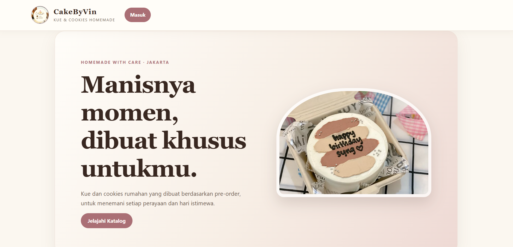
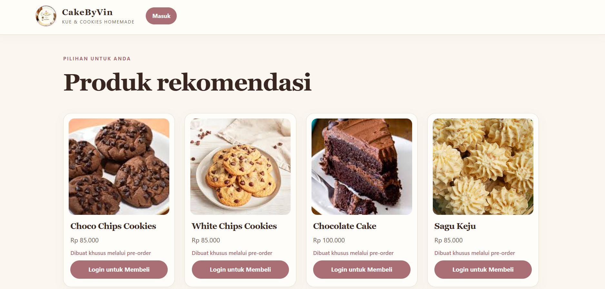
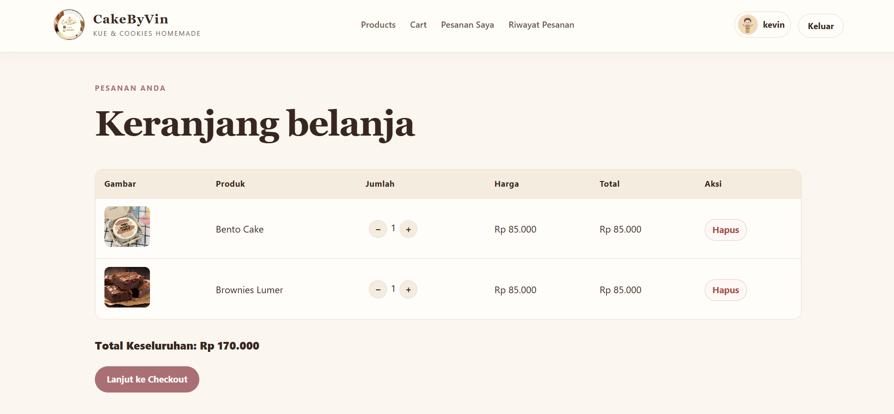
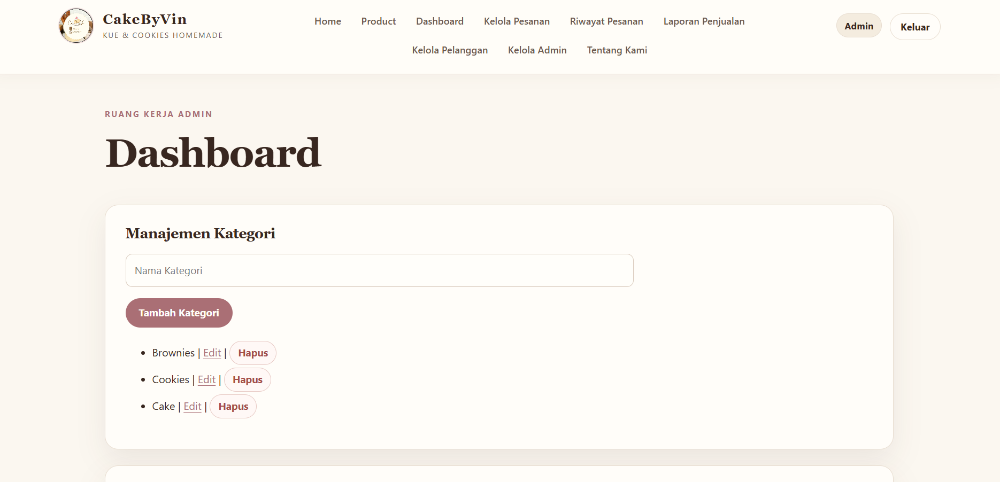
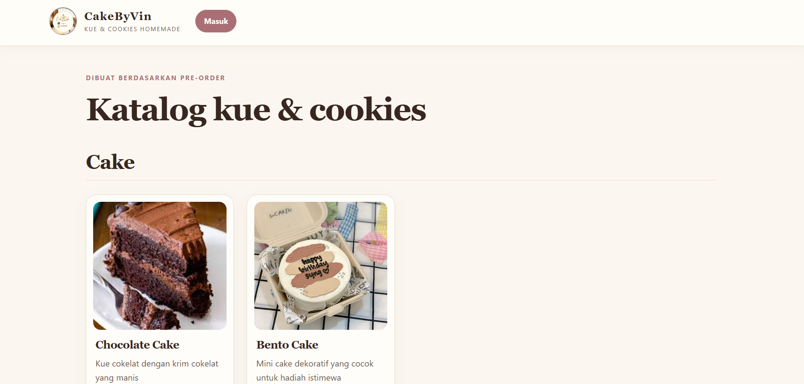

PROYEK AKADEMIK / TUGAS AKHIR
Website Penjualan CakeByVin
Website penjualan kue dan cookies untuk mendukung katalog dan proses transaksi online.
Ringkasan & Tujuan
Membangun sistem penjualan online yang menggabungkan katalog produk, transaksi, dan rekomendasi berdasarkan riwayat pembelian.
Peran & Kontribusi
Mengembangkan website dengan PHP dan MySQL, menerapkan rekomendasi produk, mengintegrasikan Midtrans, serta melakukan pengujian.
Fitur Utama
Katalog produk, keranjang, checkout, pengelolaan pesanan, pembayaran melalui payment gateway, dashboard admin, dan rekomendasi produk.
Teknologi
PHP, MySQL, HTML, CSS, JavaScript, dan Midtrans.
Sistem Rekomendasi
Item-Based Collaborative Filtering dengan Cosine Similarity berdasarkan riwayat pembelian.
Pengujian & Evaluasi
Dilakukan Black Box Testing dan UAT. Evaluasi UAT melibatkan 32 responden dan memperoleh 90,88%, kategori “Sangat Baik”.
Testing Documentation
Berisi 24 skenario Black Box Testing untuk halaman admin dan pengguna, serta evaluasi penerimaan melalui UAT dengan 32 responden. Pengujian pembayaran yang dicantumkan menggunakan simulasi Midtrans Sandbox.
Cuplikan fitur lainnya



